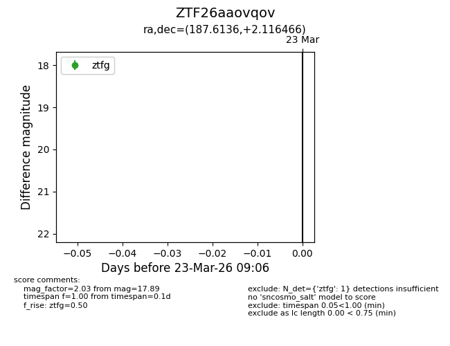
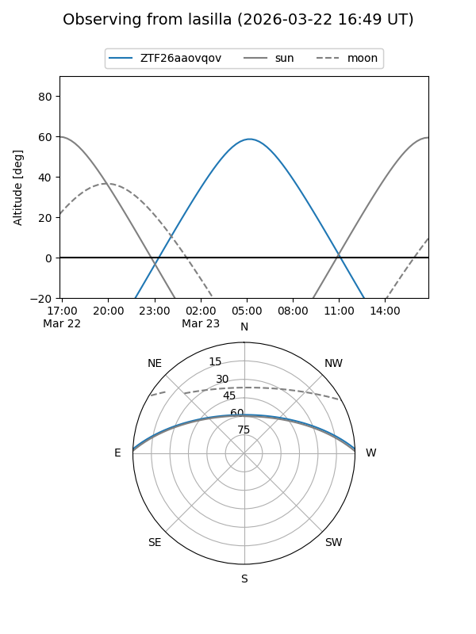
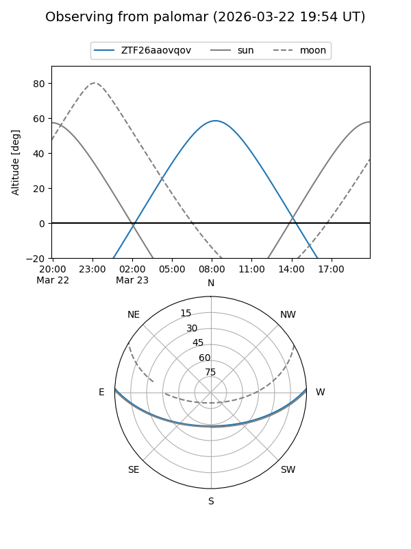

ZTF26aaovqov
Target ZTF26aaovqov at 2026-03-23 09:08
Aliases and brokers:
FINK: link
Lasair: link
ALeRCE: link
alt names
ZTF26aaovqov (ztf,fink_ztf)
Coordinates:
equatorial (ra, dec) = 187.6136,+2.11647
equatorial (HMS+DMS) = 12:30:27.27,+02:06:59.28
galactic (l, b) = (290.6843,+64.48808)
Flags:
Photometry:
last ztfg=17.89
1 ztfg detections
Lightcurve

Visibility


Additional plots